Chocolate branco com caramelo e crocante
Chocolate branco, calda de caramelo salgado e crocante de amêndoas.
castanhas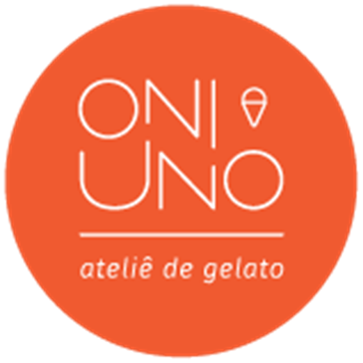
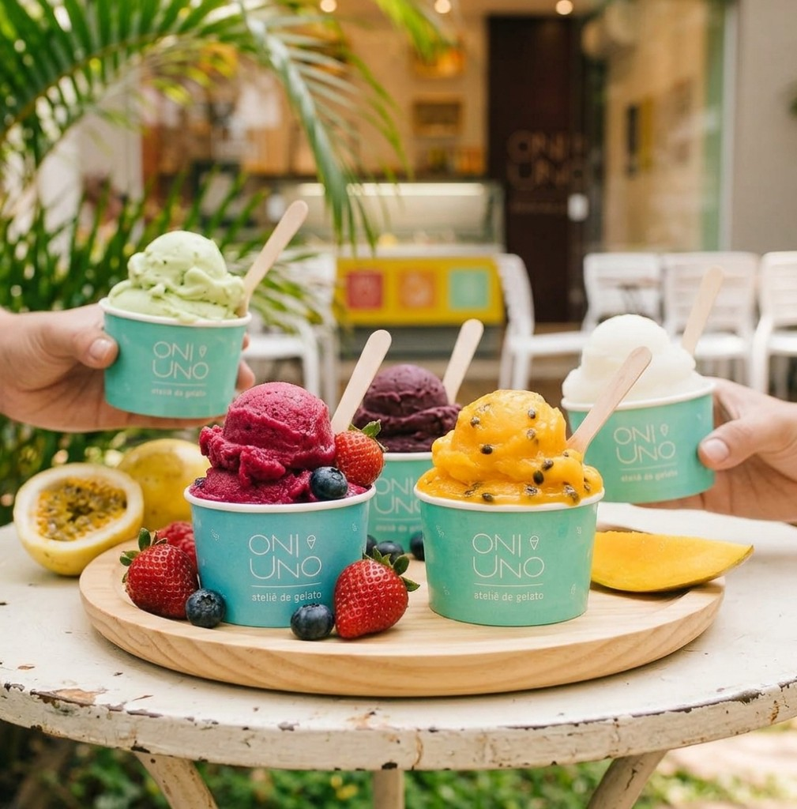
Gelato artesanal em pequena escala. Natural de verdade — conservado apenas pelo frio.
Nosso jeito
Feitos com fruta natural, sem aromas nem corantes artificiais e com baixa incorporação de ar. Usamos fruta sem tratamento térmico para preservar vitaminas e deixar o sabor mais intenso.
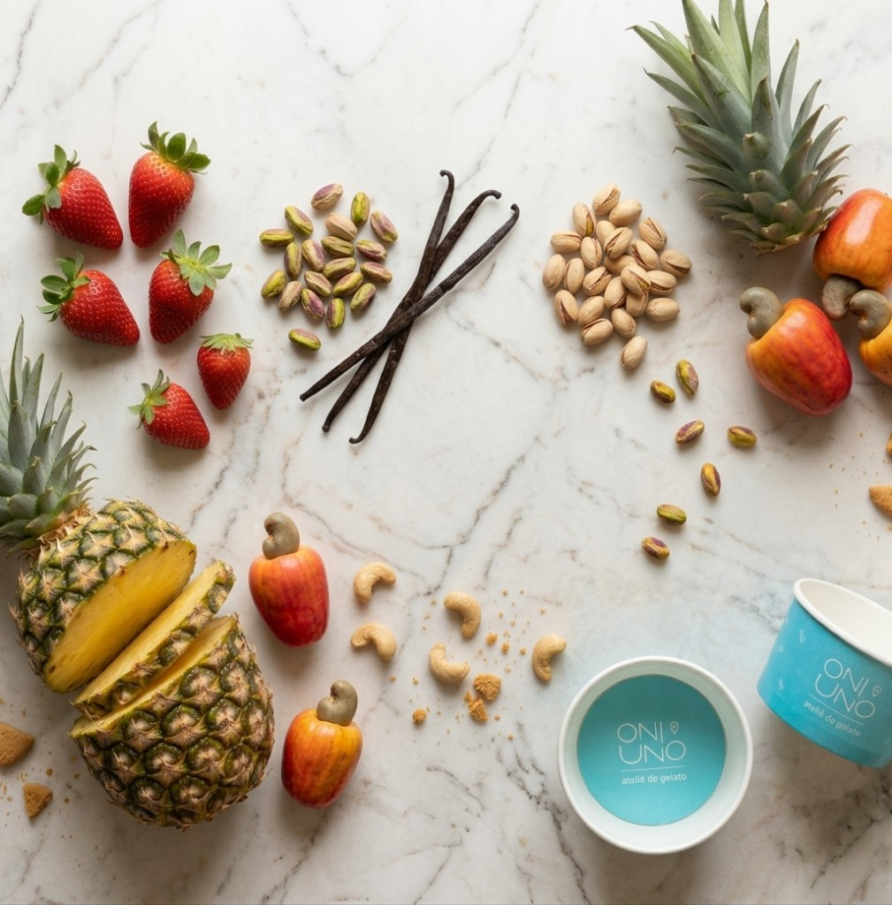
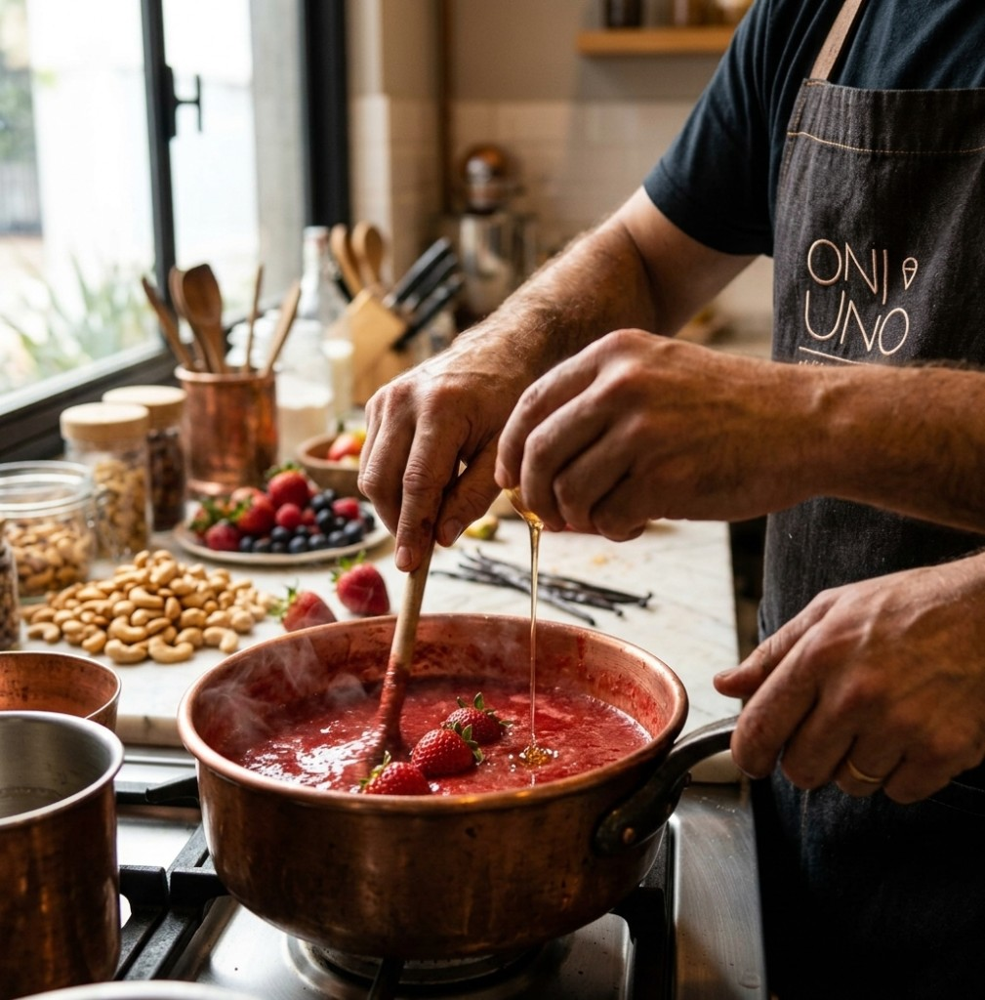
“Cada sabor é elaborado para preservar a cor, o aroma e o sabor genuíno de cada ingrediente.”
Vanessa Brito — fundadora & mestre gelateira
Cardápio vivo
À base de leite, sorbetes de água e opções diet — sempre frescos, sempre da casa.
Chocolate branco, calda de caramelo salgado e crocante de amêndoas.
castanhasFior di latte mesclado com brigadeiro de panela — chocolate e branco.
Leite e creme de leite fresco. O clássico que combina com tudo.
Amendoim com farofinha de paçoca.
amendoimCremoso, aveludado, levemente tostado.
castanhasChocolate com avelã — aquele bombom dourado, sabe?
castanhasBanana, doce de leite e farofinha de biscoito.
glútenCream cheese, massa de torta e geleia artesanal da casa.
glútenSorbet de amora, framboesa e morango.
veganoCombinação tropical, leve e intensa.
veganoSorbet de abacaxi com caju.
veganoSorbet de cajá puro.
veganoCacau intenso, água e açúcar.
veganoFeito para quem busca equilíbrio, sem abrir mão do sabor.
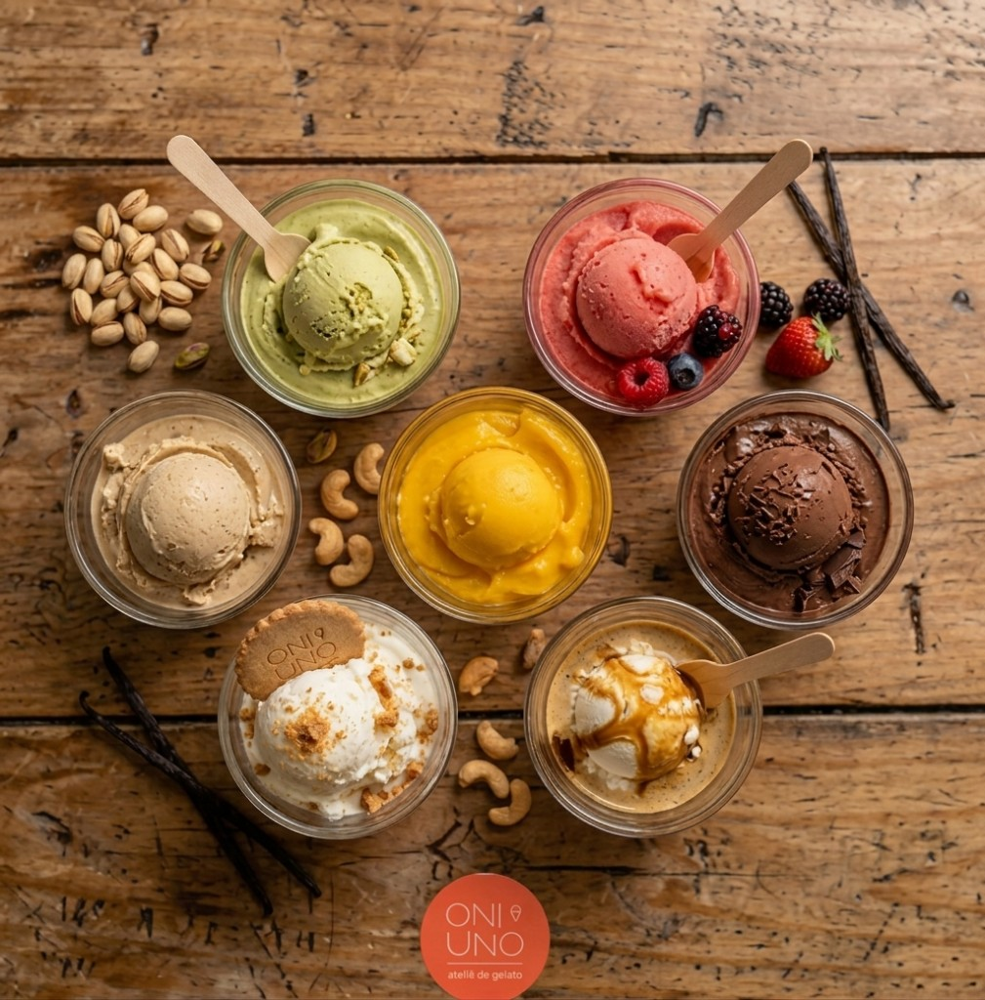
Cardápio
Copinhos, casquinhas, para levar, picolés, sobremesas e bebidas da casa.
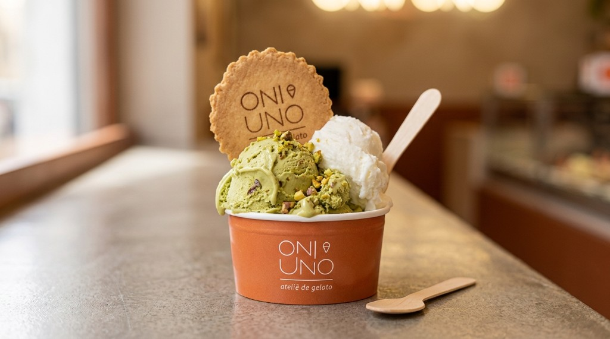
Até 3 sabores + biscoito artesanal
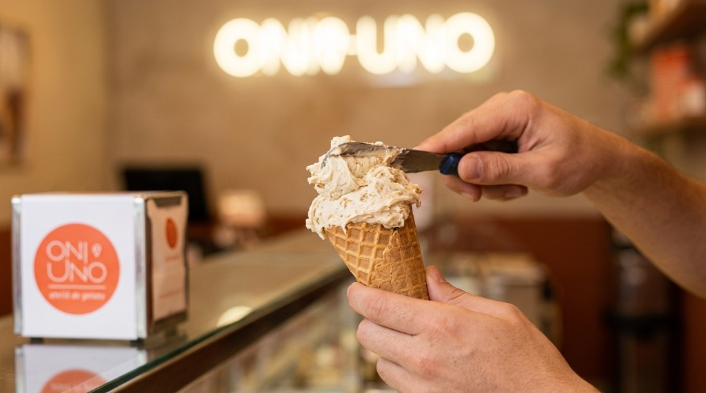
Até 2 sabores · feitas na gelateria · 150g
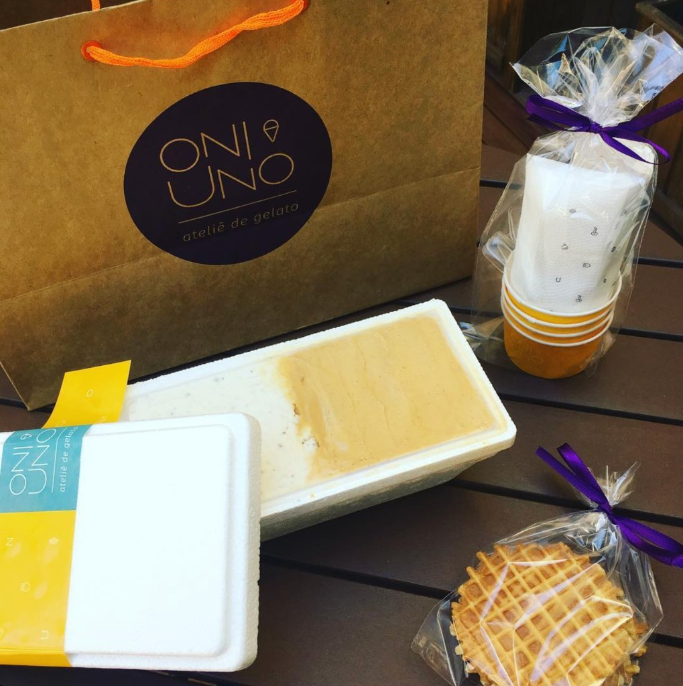
Até 3 sabores + biscoitos da casa
Para os pequenos — e para os pets
Doce da casa com o nosso gelato
castanhasglúten
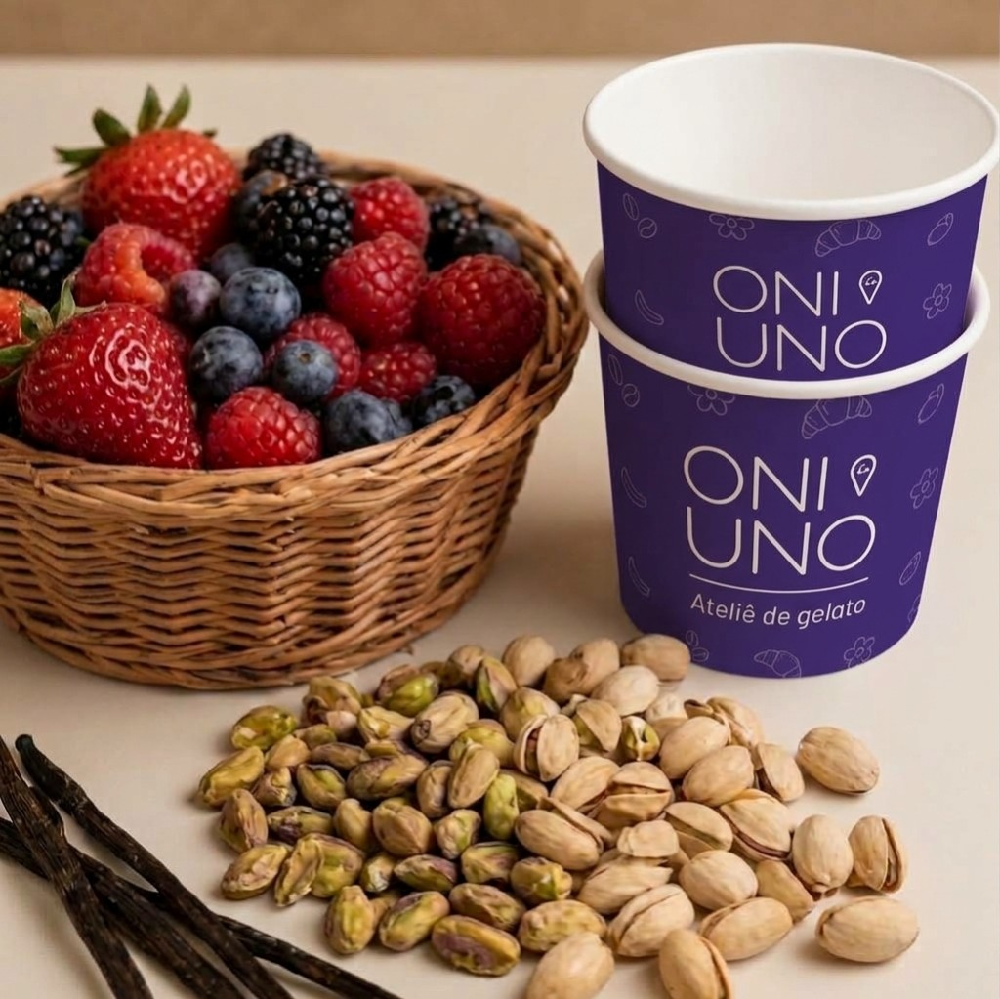
Para acompanhar o gelato
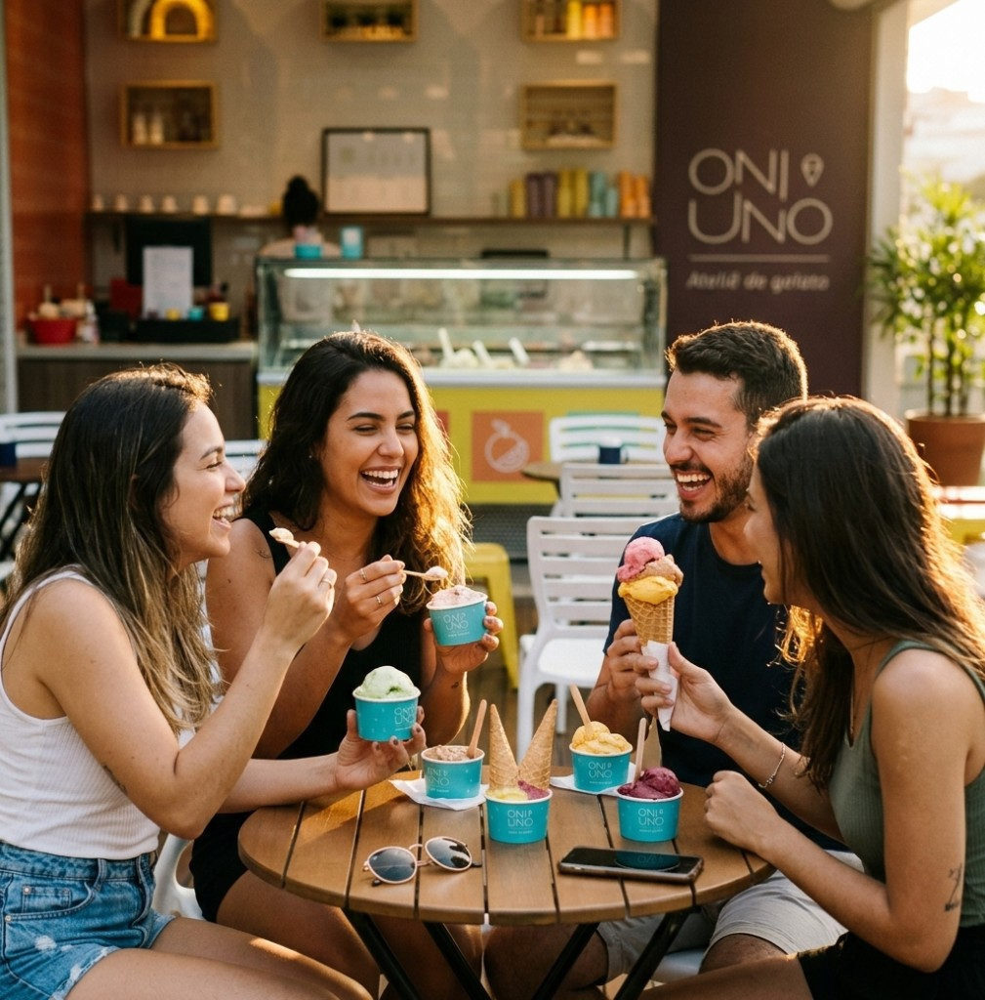
Mais do que gelato
Do ambiente acolhedor aos sabores feitos com carinho — a experiência ONI UNO é para viver na loja, com amigos, família e também com o seu pet.
Nossa história
Um produto feito para ser exclusivo — como cada pessoa, cada momento.
O projeto nasceu em 2017 para produzir sorvetes de forma artesanal, em pequena escala — sempre fresco, feito com atenção e cuidado.
Ingredientes naturais, frescos e de produtores locais, sem conservantes nem aditivos químicos. Servidos espatulados em copinhos com biscoitos artesanais ou em casquinhas da própria gelateria.
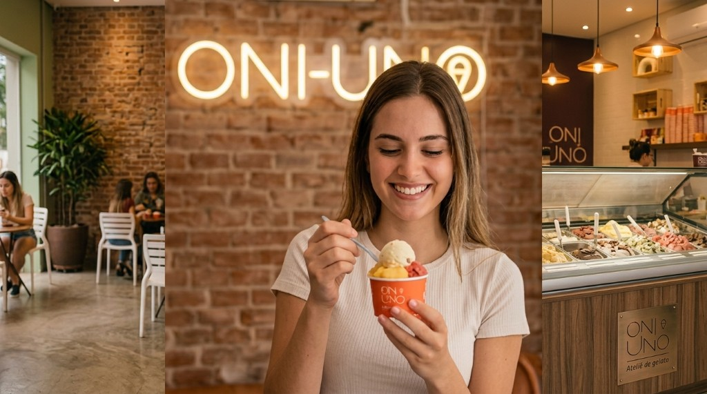
Onde nos encontrar
Venha viver momentos ainda mais doces com a gente.
CLSW 103 Bloco B Loja 1 — Subsolo
CLN 303 Bloco A Loja 16
Para o seu negócio
Atendemos restaurantes, cafeterias, hotéis, buffets e empresas que buscam uma experiência gastronômica diferenciada. Produção artesanal em Brasília, com matérias-primas naturais e frescas.
Falar com a equipe